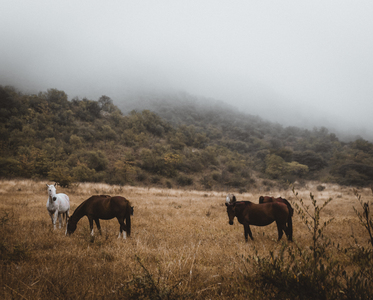

LA FOTOGRAFIA COMO FORMA DE VIDA
¡Bienvenido! Gracias por visitar mi sitio web. Mi nombre es José, te invito a recorrer mis proyectos y trabajos, desde su comienzo hasta la actualidad. Comparto desde aqui mi pasión por la fotografia.
